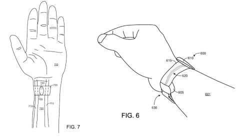

Несмотря на то, что корпорация Microsoft выбывает из гонки носимых устройств по контролю за здоровьем, в своё время она провела множество исследований в данной области. Среди прочих был обнаружен и патент на датчик сердцебиения нового типа. Патент под названием "Преобразователь давления невживляемым датчиком измерения пульса" должен был заменить обычный оптический датчик, который используется в фитнес-браслетах вроде Fitbit, Microsoft Band и "умных" часах Apple Watch.
На смену традиционному датчику должен был прийти физический пьезоэлектрический преобразователь от Microsoft, который помещается на запястье пользователя и измеряет пульс напрямую.